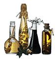

Как эффективно бороться с постоянно растущей резистентностью, ведь известно, что скорость её роста опережает разработку новых антимикробных препаратов. Возможно, существует альтернатива - воздействие на сами механизмы резистентности, например, на плазмиды, ответственные за резистентность. И помочь в этом могут эфирные масла различных растений.
Казалось бы, единственным решением проблемы растущей резистентности бактерий, приводящей к неэффективности терапии, является разработка новых антимикробных препаратов. Однако альтернативу может представлять также воздействие на сами механизмы резистентности, как это произошло, например, с внедрением ингибиторов β-лактамаз. Новую альтернативу представляет возможность устранения плазмид, ответственных за резистентность.

Об антимикробной активности эфирных масел и их производных известно давно, однако механизм действия остаётся не совсем ясным. Исследователи из Венгрии изучили антимикробную и антиплазмидную активность 11 эфирных масел (апельсинового, обыкновенной ромашки, эвкалипта, сладкого укропа, герани, можжевельника, розмарина, чабреца, австралийского чайного дерева, очищенного терпентинового масла, масла мяты перечной), полученных из растений 6 семейств. Масла тестировались методом разведения в агаре с определением минимальной подавляющей концентрации для одного грам(+) (Staphylococcus epidermidis), одного грам(-) (Escherichia coli F'lac K12LE140) микроорганизма и двух штаммов грибов (Saccaromyces cerevisiae 0425 δ/1 и 0425 52C). Масла, показавшие антимикробную активность в отношении E.coli F'lac, в дальнейшем тестировались на антиплазмидную активность.
Антимикробная активность выявлена у 10 из 11 эфирных масел. Масло перечной мяты проявило значительную антиплазмидную активность. Ментол, главный компонент масла перечной мяты, был исследован отдельно, и у него также выявлена значительная антиплазмидная активность.
Таким образом, в проведённом исследовании показана эффективность эфирных масел in vitro как антимикробных и антиплазмидных агентов. В дальнейшем планируется изучить совместное действие эфирных масел и антибиотиков на различные штаммы бактерий.
Schelz ZS, Molnar J, Hofmann J.
Antimicrobial activity of volatile oils.
Int J Antimicrob Agents 2004; 24S:S205. Poster abstract 609/92P.